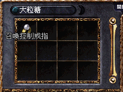

|
2003年6月9日
台灣天堂金氏記錄 - 等級最高玩家
鳴謝玩家dfr219提供資料，內容如下：
伺服器：戰神伺服器
角色名稱：娜希雅
等級：Lv71
體力：HP 900
武器：+10大馬
裝備：古金甲，+7騎面，+9精盾(或+5伊盾)，+7力套，+7鋼長靴等
願望：超過韓國等級最高玩家，成為世界第一的高手
巴風特也會掉召戒

鳴謝香港愛神玩家大粒糖提供消息，她在無限大戰中的巴風特裡打到召喚控制戒指呢！暫時已知會掉召戒的怪有幼龍、四色長老、死亡騎士及巴風特。
來源：Lineage Compendium
以下為翻譯的內容，因此未必完全提及流程中的每一個要點，大家在進行任務時要注意NPC的對話內容及提示。
1. 首先需要湊齊4種職業的50級玩家各一人，並到象牙塔3/F找NPC Dicardin對話，在接受任務後便會提示到傲塔2/F去開始任務。
2. 所有必須站在王族的三格範圍內，然後王族與傲塔2/F的NPC對話，那位NPC會傳送大家到50級任務的區域。（地圖）
3. |